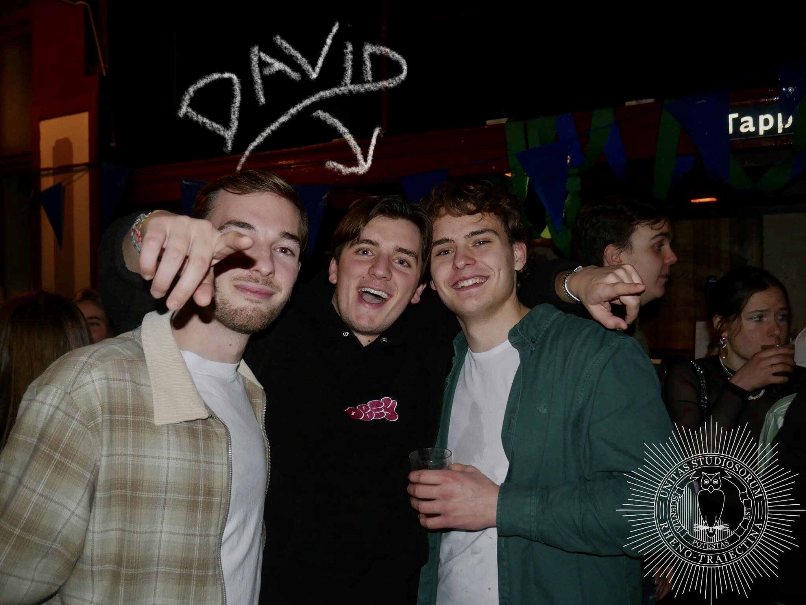

House Archives was founded by David Jenniskens in 2024 during a project for his bachelor's. David wanted to portray his passion for music, especially House Music, by creating a website that informs all House listeners. Growing up, David listened to all kinds of music as his parents always loved music. At the age of nine, David learned to play the guitar but realised when he got older, his interests shifted towards electronic music. As of now, he mostly listens to House music and wants to share his passion with as many people as possible. "Music is the message" is the message of our company.
Contact Us
Shoot us a message in our mail or Whatsapp below!
- House Archives
- Wibautstraat 2
- 1091GM Amsterdam
- contact@housearchives.com
- (+31) 020 595 1405